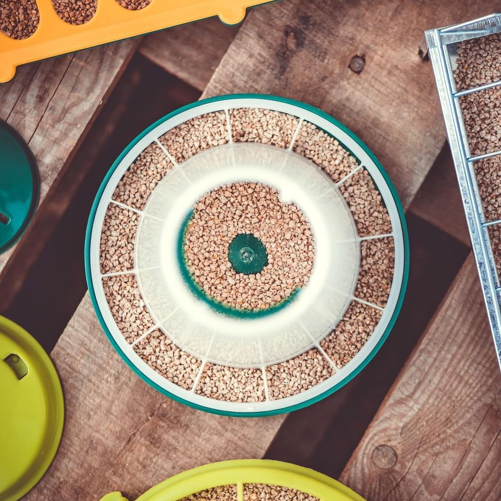

Hydina podľa @farmamix.sk — Normy Jedál
Asi najobľúbenejším typom krmítka pre hydinu sú práve tubusové krmítka ... kde z vrchu nasypete krmivo pre Vašu hydinu a to sa postupne sype podľa potreby ;)
ℹ️ 1kg / 1,5kg / 6kg / 7kg / 10kg / 15kg
#farma #farmamix #farm #bio #nature #chovatel #farmarik #farmar #krmitko #tubusovekrmitko #kura #sliepka #broiler #holub #hydina